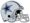

De: La Frikipedia, la enciclopedia extremadamente seria.
De: La Frikipedia, la enciclopedia extremadamente seria. De: La Frikipedia, la enciclopedia extremadamente seria.
| "Goofy" Pérez  | |||
| |||
| Nacimiento | 1981 | ||
| Nacionalidad | | ||
| Demarcación | Mariscal | ||
| Club actual | | ||
| TouchDowns | apuestas aquí | ||
| Año de debut | 2007 | ||
| Club de debut | | ||
| notas | | ||
Rodrigo "Goofy" Pérez Ojeda es un jugador de furbo americano de nacionalidad mexicana y seleccionado nacional, es conocido por haber perdido 3453 finales contra los Borregos Salvajes de Monterrey dos años antes de que los hecharan de la ONEFA. Despues se hizo un pro y se fue con los Jets de Balbuena junto con un LineBaker estrella que es Richie Barraca. Suele se confundido con otro QB al que le decían el Trivi, pero no es el mismo ya que el Trivi jugaba con los Autenticos Tigres de Nuevo León.
Le apodaron Goofy debido a la escasa materia gris que posee ya que se graduó de la universidad como a los 27 años.
Como ya lo había comentado, cuando todavía era colegial, perdió 9438 finales contra los Borregos Salvajes de Monterrey, el tipo se fue de colegiales sin un puto título, pero fue seleccionado nacional varias veces, estuvo a punto de ir a un Mundial de Americano en 2007, pero como siempre México tuvo problemas y no fue. En 2011 México si fue al Mundial de Americano, pero a México y a EUA les prohibieron usar profesionales y el idiota de Raul Rivera convocó a un QB y un pateador muy gilipollas, por los que México solo ganó el 4 lugar.
Retomando el tema, ya como todo un pro consiguió el bicampeonato de la OMFA pro y perdió una final, despues de sus buenas marcas se fue a España, pero diganme ¿que carajos va a hacer ayá?, la liga de México es mejor y tiene más chance de ver a su familia, aunque la paga y las Españolas le convenían!!!, asi que irse para España no fue tan mala idea.
| Equipo | Periodo | Campeonatos |
|---|---|---|
| |
2002-2007 | Ninguno Coño!! |
| Equipo | Periodo | Campeonatos |
|---|---|---|
| |
2007-2011 | Bicampeonato 2009-2010 |
| |
2011-presente | Joder que no se nada del futbol americano en españa!!! |
| Equipo | Periodo | Campeonatos |
|---|---|---|
| |
2005-presente | Un Chingo de Tazones |
Debido a que el Furbo Americano en México es muy malpagado, el tipo también se dedica a muchas otras cosas como la pornografía, la prostitución, tráfico de Drogas y zoofilia a entrenar niños, es maestro de educación física, trabaja en los telefonos y estudio comunicaciones, carrera en la que se título con un escaso promedio de 1.2 (cosa rara, creemos que tuvo sexo con sus profesoras es tan fregón que puede darse estos lujos).
| |
|---|
| AFC Sur | AFC Oeste | NFC Norte | NFC Oeste | Súper Tazón |
Autor(es):